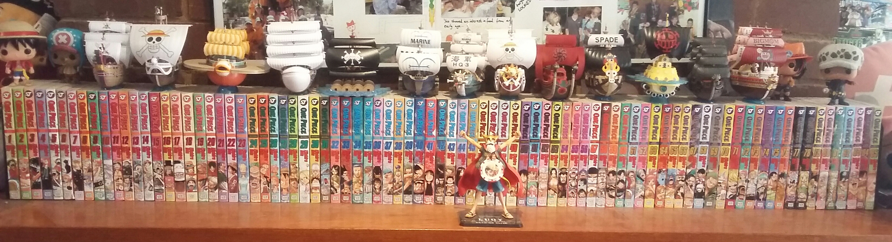

What Is Anime?
'Anime' is Japanese abbreviation of the word 'animation' is technically used to refer to all animation. To those outside Japan, it has become the term for animation specifically from Japan, though some Western companies such as Netflix have also been attempting to break into the anime industry. Originally, anime was produced by and for Japan only—a local product, with a distinct look-and-feel to not just the artwork but the storytelling, the themes, and the concepts. Since the 1980s or so, it has become an international phenomenon, attracting millions of crazy fans (totally not me) and being translated into many languages.
What is it that makes this anime so special compared to other animation outside Japan? The answer to that is pretty simple: its different. These differences are pretty clear once you watch. From the artwork to the storytelling, breadth of material (like.....how do they even come up with some of those ideas, seriously) and even cultural nuances exhibited by the characters, all of these are extremely differernt from what can be seen in Western-style animation. Well, most western animation, with the exception of a couple of shows such as Avatar: The Last Airbender which is still being debated upon as to whether of not it counts as an anime.
One distinctive trait that immediately sets anime apart is the art style. Anime art styles can range from the flamboyant and outlandish in shows like Yu-Gi-O-- *coughs* One Piece to the simple and direct in shows like "Ping-Pong the Animation." That said, even shows with more "basic" artwork are still visually striking with few exceptions.
Unlike the nation producing it, anime is not always shy and polite, especially regarding content. Most anime typically run in seasons, with each season running around 12-30 episodes and most anime running about one or two seasons. Approximately 30 (though this number is growing) new anime are produced each season. This adds up to a total of around 12,000 animes that have been produced since it first started. This also means that studios are forever trying to find different stories to produce, which can be...... interesting when you decide to read some summaries of anime. However, popular anime can run for dozens (sometimes hundreds) of episodes. The best anime, though, no matter what their length, all demand great emotional involvement from the viewer.
